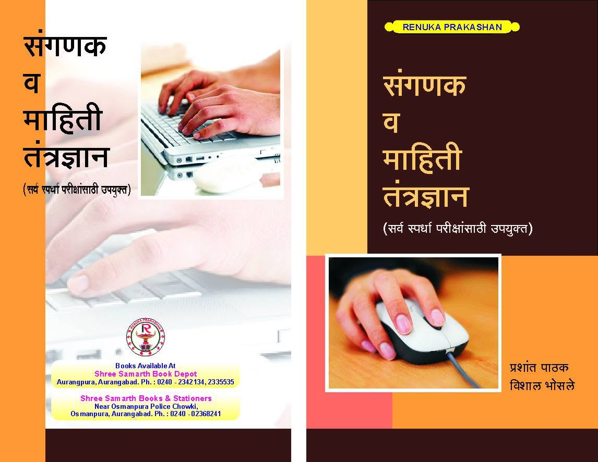

About
I am an Assistant Professor in the Department of Computer Science and Engineering at College of Engineering, Kolhapur since June 2025. Prior to this, I was working with Government Engineering College, Ch. Sambhajinagar (Aurangabad) since Nov 2009 -- June 2025.
I have completed my Ph.D. at the Indian Institute of Technology Indore under the guidance of Prof. Surya Prakash. My research interests include Biometrics, Machine Learning, Deep Learning, Pattern Recognition, and Computer Vision.
Education

Doctor of Philosophy (PhD), Computer Science & Engineering
Indian Institute of Technology, Indore
Jul 2023 - Jul 2026 | Guide:
Prof. Surya Prakash
Title: Vision-based Biometric Identification of Cattle using
Lightweight Models
Master of Engineering, Computer Science & Engineering
Government College of Engineering, Aurangabad
2009 - 2013 | Guide:
Dr. Vivek Kshirsagar
Title: Real-Time Face Detection & Recognition System using OpenCV
Bachelor of Engineering (BE), Information Technology
Government College of Engineering, Aurangabad
Aug 2003 - Jul 2007
Experience
Assistant Professor
Government College of Engineering, Kolhapur
Jun 2025 - Present · 1 yr 3
mos
Kolhapur, Maharashtra, India
Assistant Professor
Government College of Engineering, Aurangabad
Nov 2009 - Jun 2025 · 15 yrs 8
mos
Maharashtra, India
Web Developer
Indigo Consulting
Sep 2008 - Nov 2009 · 1 yr 3 mos
Mumbai, Maharashtra, India
Software Developer
Transtrite Telematics Pvt Ltd
Feb 2008 - Sep 2008 · 8 mos
Mumbai, Maharashtra,
India
Junior Software Developer
AMC Solutions Corporation
Jul 2007 - Jan 2008
Aurangabad, Maharashtra, India
Selected Publications
-
SSL-guided frame selection from video for cattle identification using hybrid CNN–ViT
IEEE Transactions on Biometrics, Behavior, and Identity Science.
https://doi.org/10.1109/TBIOM.2026.3728838 -
Attention-based multi-modal robust cattle identification technique using deep learning
Computers and Electronics in Agriculture, 238, 110747.
https://doi.org/10.1016/j.compag.2026.110747 -
Enhancing digital cattle identification with fine-grained image analysis
Expert Systems with Applications, 129409.
https://doi.org/10.1016/j.eswa.2026.129409 -
A lightweight, few-shot ready embedding framework for cattle identification using retinal images
Computers and Electronics in Agriculture, 254, 112230.
https://doi.org/10.1016/j.compag.2026.112230 -
Breast cancer detection using ANN network and performance analysis with SVM
International Journal of Computer Engineering and Technology, 10(3), 75-86.
https://doi.org/10.1016/j.ijcet.2026.10.008 -
Lung cancer detection system using image processing and machine learning techniques
International Journal of Advanced Trends in Computer Science and Engineering.
https://doi.org/10.1016/j.ijates.2026.10.005 -
Prediction of degree student achievement analysis
IOP Conference Series: Materials Science and Engineering, 1070(1), 012057.
https://doi.org/10.1088/1757-899X/1070/1/012057
Books/Book Chapters
-

Computer and Information Technology for Competitive Examinations
Renuka Publications, 2013.
Teaching
I am committed to creating an engaging and inclusive learning environment that connects fundamental concepts with practical applications. My teaching approach emphasizes conceptual clarity, hands-on learning, problem-solving, and active student participation. I have taught undergraduate courses in computer science and engineering, supervised laboratory sessions, and guided students in academic projects. Below is a summary of my teaching experience:
| Subject Name | Academic Year(s) |
|---|---|
| Machine Learning | Winter 2026 |
| Deep Learning | Winter 2026, Summer 2023 |
| Engineering Exploration (Design Thinking, IoT and Live Projects) | Winter 2020, 2021, 2022, 2023 |
| Software Engineering | Winter 2017, 2018, 2019 |
| Web Technologies (HTML, CSS, JavaScript) | Summer 2011, 2012, 2013, 2014, 2015, 2016, 2017, 2018, 2019, 2020, 2021, 2022, 2023 |
| ASP.NET C# | Summer 2009, 2010, 2011, 2012, 2013, 2014, 2015 |
| Professional Ethics and Cyber Law | Summer 2013, 2014, 2015 2017, 2018, 2019 |
| Cryptography and Network Security | Summer 2013, 2014, 2015, 2016 |
| Parallel Computing | Summer 2016, 2018, 2019 |
Academic Activities
This section presents an overview of my academic activities and professional contributions, including training programs, workshops, invited talks, consultancy and IGR activities, awards, and other academic engagements.
Training Programs Attended
- Android Programming — CNC Web World, Pune | 12–26 September 2012 | 2 Weeks
- Technology-Driven Innovation & Entrepreneurship — IIT Bombay, Aurangabad | 8–12 February 2017 | 1 Week
- Optimization in Machine Learning — GECA, Aurangabad | 27 February–3 March 2017 | 1 Week
- Cloud Computing Through ICT — NITTTR Chandigarh, Aurangabad | 23–27 October 2017 | 1 Week
- Python Programming for Image Processing — GECA, Aurangabad | 19–23 September 2018 | 1 Week
- Training the Trainers for the Course: Engineering Exploration — GECA, Aurangabad | 3–7 August 2018 | 1 Week
- Remote Sensing & Geographic Information System — GECA, Aurangabad | 29 January–2 February 2020 | 1 Week
- Reliable Google Cloud Infrastructure: Design and Process — Coursera, Online | 20 February–5 March 2020 | 2 Weeks
- Digital Transformation in Teaching-Learning Process — IIT Bombay, Online | 6–22 April 2020 | 2 Weeks
- Web Application Security Testing with OWASP ZAP — Coursera, Online | 20–24 April 2020 | 1 Week
- User Experience Design – Creating User Profiles — Coursera, Online | 23–28 April 2020 | 1 Week
- Behavioural Practices for Maximum Personal Productivity — Government Polytechnic Nagpur, Online | 21–26 September 2020 | 1 Week
- Industrial Training Program on IIoT — NSIC Hyderabad, Online | 16–30 March 2021 | 2 Weeks
- Next-Generation Software Tools & Trends for Industrial Solutions — GECA, Online | 13–17 June 2020 | 1 Week
- Product Development & Industrial Research 2020 — GECA, Online | 6–10 July 2020 | 1 Week
- Industry-Oriented FDP on Artificial Intelligence — ATAL and MSME Meerut, Online | 6–11 June 2021 | 1 Week
- Product Development & Analysis — GECA, Online | 21–25 February 2022 | 1 Week
- NITTT - Orientation Towards Technical Education and Curriculum Aspects — NPTEL Online | 1 Week
- NITTT - Professional Ethics and Sustainability — NPTEL Online | 1 Week
- NITTT - Communication Skills, Modes and Knowledge Dissemination — NPTEL Online | 1 Week
- NITTT - Instructional Planning and Delivery — NPTEL Online | 1 Week
- NITTT - Technology Enabled Learning and Life-Long Self Learning — NPTEL Online | 1 Week
- NITTT - Student Assessment and Evaluation — NPTEL Online | 1 Week
- NITTT - Creative Problem Solving, Innovation and Meaningful R and D — NPTEL Online | 1 Week
- NITTT - Institutional Management and Administrative Procedures — NPTEL Online | 1 Week
Training Programs Organized
- Next Generation Software Tools & Trends for Industrial Solutions | 13 - 17 Jun 20 | 1 Week | GECA-Online
Invited Talks
- Organization: Reserve Bank of India | Topic: Computer Fundamentals | Date: 2026
- Organization: Mahindra CIE | Topic: Industry 4.0 | Date: 2021
Consultancy & IGR
- Developed Android Application to manage construction progress for Commisioner Office, GCOE Ch. Sambhajinagar
- Developed Legal Tracking System for Municipal Commissioner Office, GCOE Ch. Sambhajinagar
- Third Party Testing services for various government projects, GCOE Ch. Sambhajinagar
Workshops Attended
- Self Management & Team Management for Success: Breaking the Barriers — GECA, Aurangabad | 18 September 2012 | 1 Day
- Windows Communication Foundation 4.0 — Seed Infotech, Pune | 28–30 June 2013 | 3 Days
- Big Data Analytics – Foundation — SkillCert Consultancy, Aurangabad | 10–11 December 2014 | 2 Days
- NBA Preparation — ESCI India, Aurangabad | 20–21 December 2014 | 2 Days
- Cyber Security & Cyber Crimes — MIT Aurangabad, Aurangabad | 14–15 February 2015 | 2 Days
- Faculty Development Program — Tata Consultancy Services, Pune | 31 March 2016 | 1 Day
- Skill-Based Hiring and Effective Use of LinkedIn — RMD Sinhagad College, Online | 16 July 2020 | 1 Day
- Procurement Through Government e-Marketplace — GECA, Online | 4 August 2020 | 1 Day
- Data Science & Application — Government College of Engineering, Karad, Online | 23 May 2020 | 1 Day
- Entrepreneurship & Innovation — GECA, Aurangabad | 8–10 February 2019 | 3 Days
- Marathwada Incubator Bootcamp – Collaborate — CMIA and MAGIC, Aurangabad | 23–24 March 2019 | 2 Days
- Regional Research Symposium on PBL — KLE Technological University, Hubli | 22–23 November 2019 | 2 Days
- Experience Design: Design Thinking for Educators in the New Normal — GECA, Online | 24–26 August 2020 | 3 Days
- Indian Patent Filing Procedure, Specification and Search — RGNIIPM Nagpur, Online | 10 March 2021 | 1 Day
- Application Programming Interface — ACM Hyderabad, Online | 8–22 April 2021 | 3 Days
Awards and Recognition
- Reviewer for Computers and Electronics in Agriculture Journal, Elsevier
- Reviewer for Computer Vision and Image Processing Conference
- Best Teaching Assistant Award 2025 | IIT Indore
- Scholarship for Quality Improvement Programme | IIT Indore | 2023-26
Administrative Responsibilities
- Library Coordinator | GEOE, Kolhapur | 2026-Present
- SIH SPOC | GEOE Kolhapur | 2026-Present
- Hostel Warden | GEOE, Ch. Sambhajinagar | 2020-2023
- Data Center Incharge | GEOE, Ch. Sambhajinagar | 2018-2023
- Website Management | GEOE, Ch. Sambhajinagar | 2015-2023
- Social Media Expert | General Assembly Election | 2019